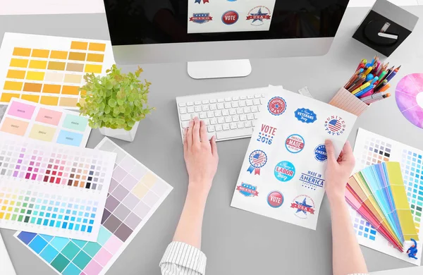

¿Pero qué es?
La palabra diseño tiene un rango muy amplio de definiciones, ya que se aplica a muchas áreas del saber humano de manera más o menos diferenciada. Sin embargo, por diseño nos referimos generalmente a un proceso de prefiguración mental, es decir, de planificación creativa, en el que se persigue la solución para algún problema concreto, especialmente en el contexto de la ingeniería, la industria, la arquitectura, la comunicación y otras disciplinas afines.
A muy grandes rasgos, el diseño no es más que la imaginación de un objeto, es decir, su concepción atendiendo a aspectos como la forma, el aspecto, la funcionalidad, la operatividad y la vida útil del mismo. Los diseñadores, por ende, no hacen más que crear objetos físicos, gráficos o de cualquier otra índole, que sirvan para un fin específico y establecido de antemano. Por ejemplo, un diseñador industrial puede prefigurar piezas de maquinaria para automóviles, o bien formas más eficientes de cañería, mientras que otros podrán dedicarse a crear muebles, juguetes, teléfonos, etc.
El diseño como una disciplina autónoma juega un rol vital en el mundo contemporáneo, a un grado tal que se ha asimilado a prácticamente todas las áreas del quehacer humano, y figura entre las carreras de estudio más demandadas internacionalmente.

Te comparto un poco de sus características:
-Observación y análisis. Ya que la necesidad del diseño surge de la cotidianidad del ser humano.
-Planificación y proyección. Proponiendo un modo de solucionar la necesidad detectada.
-Construcción y ejecución. Llevando a la realidad lo proyectado y sometiéndolo a la prueba de su funcionamiento.
Ahora que ya te compartimos algo de información sobre el diseño, ¿YA SABES DONDE ESTUDIAR? si no es así, te dejamos los links de nuestras mejores sugerencias para ti